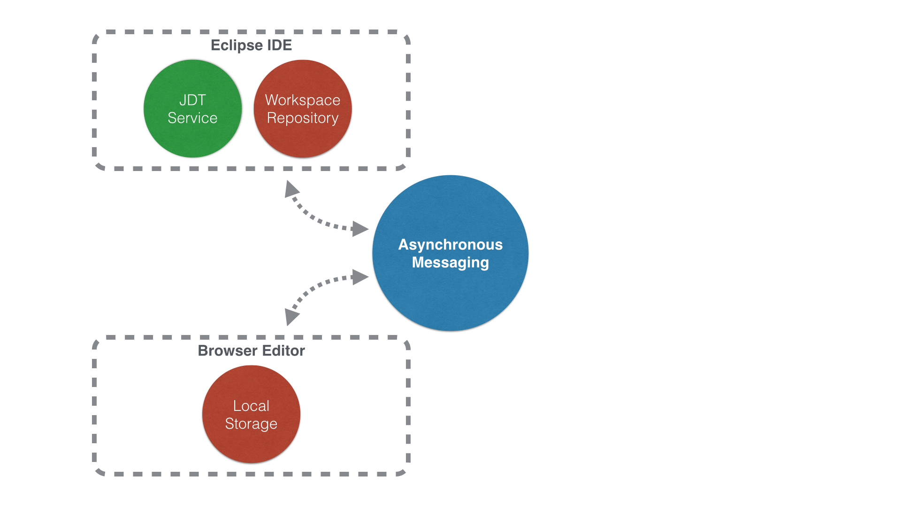

Connecting developer tools across desktop and web with Project Flux
EclipseCon France 2014
John Arthorne - IBM / @jarthorne
Cloud as Tool Platform
 Source: Sam Johnston Creative Commons BY-SA 3.0
Source: Sam Johnston Creative Commons BY-SA 3.0
Cloud as Tool Platform
- Truly cross platform
- Extreme scalability (up and down)
- Low cost tool configuration/management
What's a Flux?
late Middle English: from Latin fluxus, from fluere ‘to flow.’
- the action or process of flowing
- continuous change
- a proposed new Eclipse project
- a new architecture and infrastructure for connecting development tools across desktop, browser, and servers
Why Flux?
- Strong pressure in industry towards cloud-based developer tools, particularly when deploying to cloud-based runtimes
- Current browser-based tools showing promise but have significant gaps in functionality especially in area of compiled languages
- Currently there is no story for integrating legacy tools or providing incremental migration from desktop tools to the cloud
Project Goals
- Create cloud based tooling services that could be consumed by development environments across both desktop and web based environments
- Design and implement a new architecture and infrastructure for integrating development tools across desktop, browser, and servers
- Build a strong ecosystem around this tooling service model including both open and vendor-specific tools
- Initial code contribution from Pivotal including tooling service architecture, prototype browser-based Java tools and Eclipse integration
Architecture
Work Areas
- Basic infrastructure: messaging system, repository synchronization
- Cloud-based Java language tooling
- Cloud-based JavaScript language tooling
- Application deployment and execution services, possible debug integration
Questions?